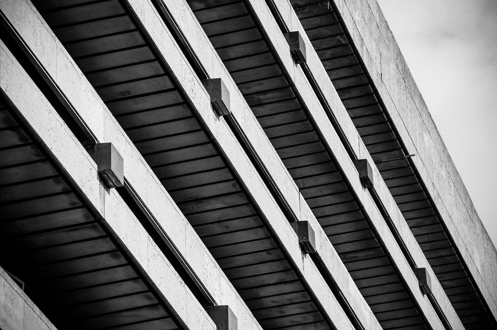
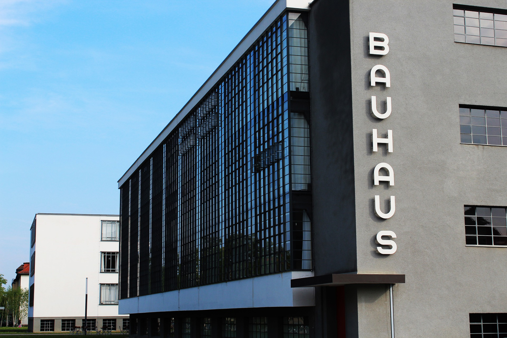
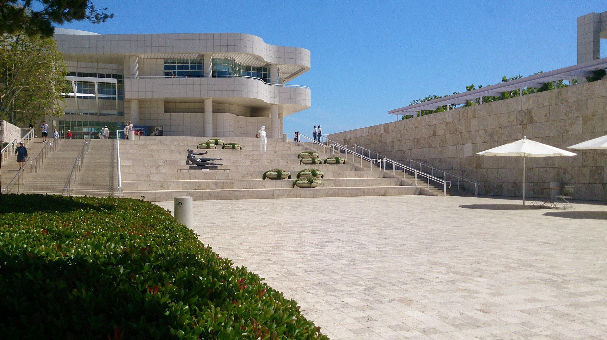

Brutalism

Brutalist architecture, also called New Brutalism, is an architectural style which emerged during the 1950s
in the United Kingdom, among the reconstruction projects of the post-war era.Brutalist buildings are characterised by minimalist
constructions that showcase the bare building materials and structural elements over decorative design.
READ MORE
Bauhaus

Bauhaus was a German art school operational from 1919 to 1933 that combined crafts and the fine arts.
The school became famous for its approach to design, which attempted to unify the principles of mass production
with individual artistic vision and strove to combine aesthetics with everyday function.
READ MORE
Modernism

Modern architecture, or modernist architecture, was an architectural style based upon new and innovative technologies of construction,
particularly the use of glass, steel, and reinforced concrete; the idea that form should follow function (functionalism); an embrace of
minimalism; and a rejection of ornament.
READ MORE